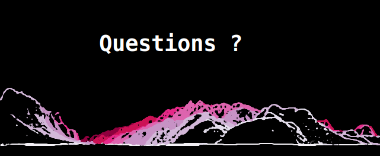

class: center name: title <img src="img/logo-choucas.png" style="width:30%;" /> ### Avancement thèse Matthieu Viry ##### 4 septembre 2019 - Pau <i>Géovisualisation pour l'aide à la décision dans un contexte d'incertitude : application à la localisation de victime en montagne</i> Co-direction : Marlène Villanova-Oliver et Paule-Annick Davoine <p style="margin:auto;padding:0;"></p> --- ## Formalisation des concepts relatifs au traitement d'une alerte <br> -- <p>➥ Ontologie d'Alerte Choucas : <a href="http://purl.org/oac">http://purl.org/oac</a></p> <br> -- <p>➥ Des discussions à venir concernant des modifications à y apporter</p> --- ## Matérialisation sous forme d'un prototype d'interface <br> ➥ <b>Respect de l'ontologie d'alerte</b> <br> -- <p> → Conversion des principaux concepts en <i>JSONschema</i> (victime, activité, zone initiale de recherche, indice, hypothèse, etc.)</p> -- <p> → Permet de prototyper rapidement des composants de saisie pour ces concepts</p> -- <p> → .. et de valider les différentes "instances" vis à vis de ces schémas.</p> -- <p> → Offre un premier niveau de granularité pour enregistrer les actions de l'utilisateur et fournir un retour en arrière (et pour sauvegarder/recharger l'ensemble des données liées à une alerte)</p> --- ## Matérialisation sous forme d'un prototype d'interface <br> ➥ <b>Respect de principes énoncés lors de précédentes réunions concernant l'accompagnement du raisonnement</b> <br> -- <p> → mise en évidence de la zone initiale de recherche (offre garantie concernant le chargement des objets et l'étendue dans laquelle sont réalisés les calculs)</p> -- <p> → plusieurs "scénarios" de créations d'indices (cf. présentation sur les interactions)</p> --- ### Exemple d'exploitation d'un indice (1) <br> <p style="text-align: center;margin: auto;"><span style="font-family:Caveat;font-style:italic;font-size:34px;">"Je suis parti de Bourg d'Oisans vers une station de ski"</span></p> <br> -- <p>➥ Définition de l'activité de la victime (randonnée et ski)</p><br> -- <p>➥ Chargement de couches liées à ces activités</p><br> -- <p>➥ Mise en forme qui s'adapte au niveau de zoom</p><br> -- <p>➥ Facilite la prise de décision concernant la définition de la Zone Initiale de Recherche (par exemple!)</p><br> --- #### ➥ Enjeux : convoquer des méthodes de géovisualisation adaptatives <br> -- <br> <p> → contexte d'utilisation (zone initiale définie ou non, niveau de zoom, etc.)</p> -- <br> <p> → profil de la victime (mise en valeur d'items d'intérêt)</p> -- <br> <p> → préférences de l'utilisateur (co-visualisation carte et vue terrain, visualisation de plusieurs scénarios avec une ou plusieurs cartes)</p> --- ### Exemple d'exploitation d'un indice (2) <br> <p style="text-align: center;margin: auto;"><span style="font-family:Caveat;font-style:italic;font-size:34px;">"Je voit une partie de plan d'eau"</span></p> <br> -- <p> → une partie ? un plan d'eau ?</p><br> -- <p> → voir ? une idée de la distance ?</p> --- #### ➥ Enjeux : objectiver le raisonnement de l'utilisateur et minimiser différents biais pouvant entrer en jeu dans son raisonnement <br> -- <p> → proposition d'objets similaires / pouvant être confondus</p><br> -- <p> → plusieurs "scénarios" de créations d'indices : à partir de la carte, de la hiérarchie des objets ou d'une zone de saisie textuelle</p> --- ### Pistes des prochains mois <br> -- <br> <p>➥ Mobiliser les indices déjà saisis et les concepts des ontologies (objets de référence et relations spatiales) pour suggérer des questions à poser au secouriste.</p> -- <br> <p>➥ Mobiliser le niveau de confiance attribué à chaque indice pour la représentation de la zone correspondante.</p> -- <br> <p>➥ Trouver des techniques de représentation adaptées à la vue terrain/3d.</p> --- class: center, middle name: thankyou ### Merci <br><br><br> --- class: center, middle name: questions 